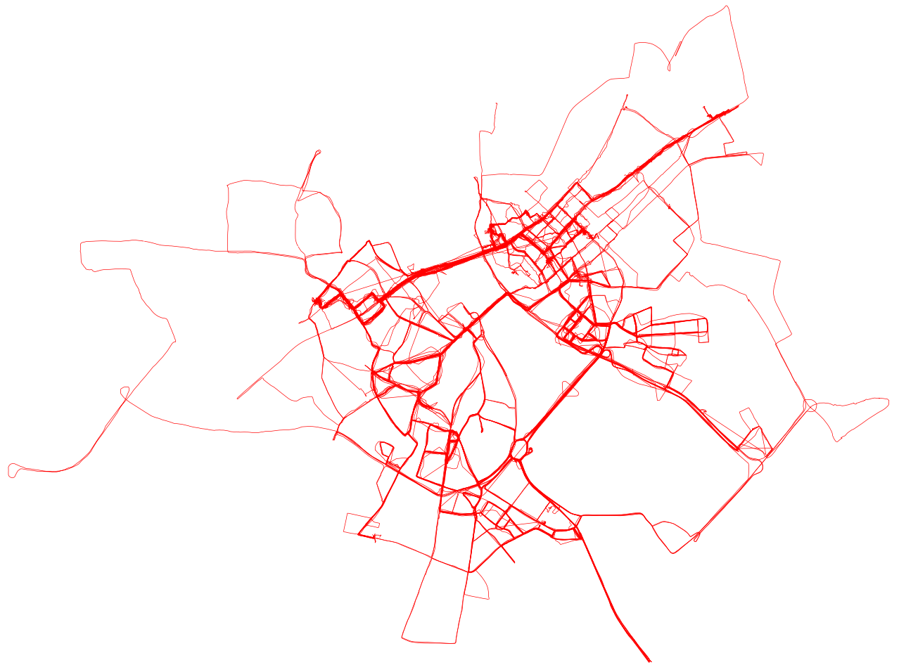
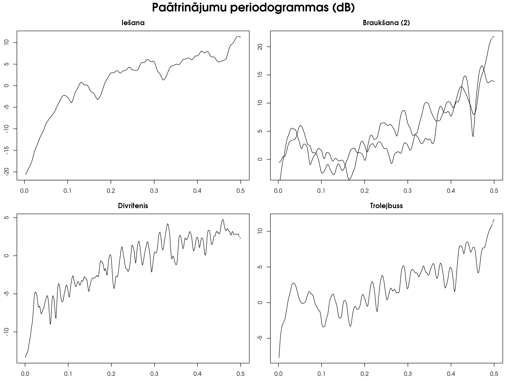
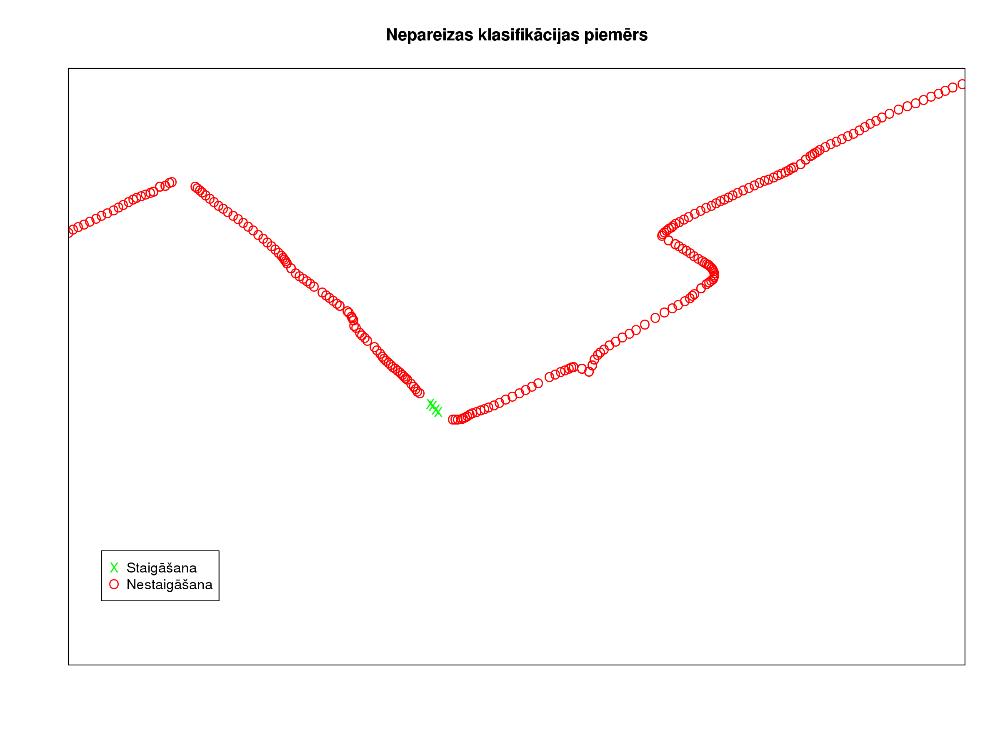

GPS datu segmentēšana
Emīls Šolmanis
Darba vadītājs: asoc. prof., Dr. dat. Jānis Zuters
Kas ir GPS?
- Globālā pozicionēšanas sistēma
- Ar vairāku satelītu palīdzību nosaka uztvērēja atrašanās vietu
- Mūsdienās precizitāte (civilajām) ierīcēm ~ 5 - 10 metri
Cik izplatīts ir GPS?
- Jebkurā mūsdienīgā mobilajā tālrunī
- Bieži iespēja pievienot auto komplektācijai
- Ļoti daudz viedtelefonu lietotņu, kas popularizē GPS datu lietošanu:
- Endomondo
- FourSquare, u.c.
- ASV FKK lēmuma rezultātā paredzams, ka popularitāte tikai turpinās augt
Kādi dati tiek lietoti darbā?
- Ierakstīti ar Samsung Galaxy Note GT-N7000 viedtālruni
- Trijnieki (garums, platums, laiks)
- Iztveršanas intervāls 1 sekunde
Kādi dati ir ierakstīti?

Kāds ir darba mērķis?
- Sadalīt datus segmentos pa transporta veidiem
- Sagrupēt iegūtos segmentus pēc vienādiem transporta veidiem
Kas ir klasterizācija?
- Mašīnmācīšanās ir mākslīgā intelekta apakšnozare, kas veido uzvedības modeļus
balstoties uz empīriskiem datiem
- Klasterizācija ir mašīnmācīšanās metode, kas grupē datu paraugus pēc kādas
kopīgas pazīmes
Kāpēc segmentēt GPS datus?
- Lai kādam nebūtu dati jāiezīmē manuāli
- Personalizētas ceļu plānošanas sistēmas
- Pilsētas infrastruktūras optimizācija
Kādi ir esošie risinājumi?
GeoLife
- Microsoft Research Asia projekts
- Izmanto lēmumu kokus, lai klasificētu segmentus
- Attiecīgi atpazīstamo transporta veidu skaits – ierobežots un autoru noteikts
Kāpēc neuzraudzītā mašīnmācīšanās?
- Nepalaiž garām jaunus, iepriekš neredzētus transporta veidus
- Algoritms noturīgāks pret nevienmērīgi sadalītām klasēm
Kādas ir iespējamās pazīmes?
- Nav pārāk daudz, jo maz pieejamās informācijas
- Pamatā jebkas ko var izgūt no attāluma / laika / virziena kombinācijas,
piemēram
- Ātrums
- Paātrinājums
- Virzienu maiņas
Paātrinājuma spektrālā analīze

Kādi ir klasterizācijas rezultāti?
- Viduvēji – liela daļa datu pareizi sagrupēti, bet ir manāmas kļūdas
- Bet atrasto klasteru skaits un sadalījums apmēram atbilst datu kopā esošajam
Kādas ir kļūdas?
- Gan pirmajā, gan otrajā algoritma posmā
- Vairāki posmi nepareizi klasificēti
- Ir segmenti, kas tiek konsekventi nepareizi iedalīti kā staigāšanas segmenti
- Pirmajā posmā mēdz būt "trokšņi", kuru rezultātā tiek nepareizi nošķelts mazs
segments pa vidu lielākam
Nepareizi nošķelts segments

Kā tās labot?
- Klasterizācijas kļūdas – ar papildus pazīmēm
- Segmentēšanas kļūdas – ieviešot heiristiku
Kādi ir secinājumi?
- Augstā frekvencē ierakstītus GPS datus ir iespējams sadalīt segmentos un grupēt
pēc transporta veida
- Paātrinājums ir laba pazīme, pēc kuras šo grupēšanu veikt
- Ar paātrinājumu vien nepietiek
Paldies par uzmanību!
Jautājumi?